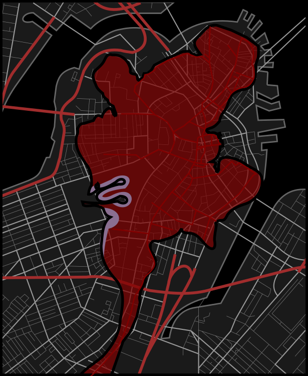
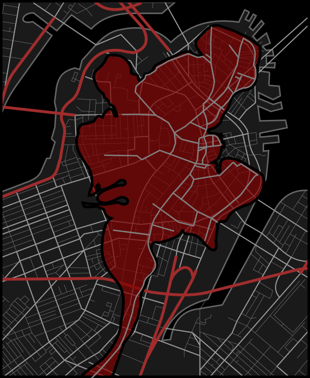

Chapter One

The Boston Gaol was the city's first prison. It has been replaced with a new building, but was once located at 26 Court Street.
The Prison Door
The novel begins by examining the irony within the colony’s layout, which includes a prison and cemetery. The existence of these locations reveals to readers that the first Puritans ultimately knew that establishing a Christian "utopia" to end human suffering and aggression was not possible.
The prison has an ominous, spiked wooden door with a wild rose bush that is growing just outside of it. This symbolically shows that nature shares pity and kindness more indiscriminately than humankind.
Once the setting is described, the author states that the roses will relieve readers of the frailty and sorrow within the oncoming story, just as they comfort prisoners who walk through the prison door.
Chapter Two

The scaffold was located at the market. According to a
map from the 1640s, the market was located at the intersection of present-day State Street and Congress Street.
The Market-Place
A crowd gathers to witness a public punishment.
Punishments within the colony are decided both legally and religiously, although the difference is minimal. Examples include expelling those with religious differences outside of Puritanism, banishing Natives who consume alcohol and become drunk, and persecuting people over accusations of witchcraft.
At present, the Puritan women within the colony are focused on the accused: a woman named Hester Prynne.
The women believe thast their local minister, Reverend Dimmesdale, is especially aggrieved by her actions since she was his congregant. It is also believed that her actions have tarnished the community, however her crimes have not yet been disclosed.
Unable to attain a death sentence, the women discuss branding Hester’s forehead, saying that whatever item she will be condemned to wear as a punishment can easily be covered up.
Soon, Hester determinedly exits from the prison, ascends the town’s scaffold, and holds a baby over her chest to clearly hide something on her bodice. Though Hester quickly accepts that she cannot hide either the baby or the item on her chest, which is an elaborately embroidered letter ‘A’ made from scarlet red cloth and gold thread. The scarlet letter stands for "Adulterer," and Hester is condemned to wear the scarlet letter for the rest of her life. After showing the letter to the crowd, Hester immediately feels it secluding her from society.
The women around Hester become angrier after seeing how beautifully she had embroidered the scarlet letter. They believe it is a mockery of the punishment and discuss wanting to rip off the letter and her gown, to replace them with unsightly alternatives.
Meanwhile, Hester and her baby are described to readers as evoking the image of Mother Mary with Baby Jesus. Yet the crowd looks on with harsh glares instead. To Hester, their harsh judgment is described as being more painful than mockery.
To mentally escape from her current situation, Hester begins to relive her past memories, including her marriage to a European scholar who had a physical anomaly where one shoulder sat higher than the other. After marrying, Hester came to New England alone without her husband, then found her way into her present situation - which she is just beginning to accept as her new reality.
Chapter Three

The scaffold was located at the market. According to a
map from the 1640s, the market was located at the intersection of present-day State Street and Congress Street.
The Recognition
At the edge of the crowd, Hester sees a Native man standing beside a European man who has the same shoulder anomaly as her husband. Hester quickly realizes that her husband has arrived, just as he gradually realizes that his wife is being publicly punished. He presses his finger to his lips, signaling her not to reveal his presence, and then turns to a nearby spectator to ask what is happening.
Posing as a traveling stranger, Hester’s husband explains that he was imprisoned by a Native tribe after arriving from Europe. The spectator then welcomes him back to “European society,” where “sin is searched out and punished.” He goes on to explain that Hester arrived from Amsterdam two years ago, but her husband never followed. Now, she has given birth to a child and refuses to name the father. After hearing this, Hester's husband becomes frustrated with himself for not having anticipated such an outcome after his long absence.
The spectator further explains that Hester must now stand on the scaffold for three hours before being condemned to wear the scarlet letter for the rest of her life. He also adds that it is unjust for her to suffer alone, but believes the father’s identity will eventually come to light.
While Hester's husband learns about why she is in this present situation, she reflects on how it is better for her affair to be discovered by her husband in such a public way, rather than in private. Meanwhile, the local leaders begin to speak, including the Governor, Minister John Wilson, and Minister Arthur Dimmesdale.
Minister Wilson announces that he has pleaded with Minister Dimmesdale to compel Hester to name the father. He argues that doing so would save her soul, demonstrate repentance, and allow Dimmesdale to fulfill his duty as her Minister.
Dimmesdale is described as young and eloquent, shaped by his formal education in Europe. The community regards him as pure and angelic.
In response to Minister Wilson's public speech, Dimmesdale asks Hester to name the father, arguing that the father does not deserve any pity. He explains that revealing the father would expose his hypocrisy and his sin. However, Hester still refuses, even when Reverend Wilson offers to remove the scarlet letter in exchange for the name of the father. Hester retorts by saying that her child will have a “heavenly father”, rather than a physical one. Dimmesdale then remarks on her generosity, puts his hand over his heart, and retreats from the scaffold.
The town’s other leaders then begin preaching long sermons on sin, using so many metaphors about the scarlet letter that the crowd begins to imagine it as “flaming” and “infernal.” As this happens, Hester's baby cries for the remainder of the entire event.
Chapter Four

The Boston Gaol was the city's first prison. It has been replaced with a new building, but was once located at 26 Court Street.
The Interview
After returning to the prison, Hester has an emotional breakdown. A doctor is then requested when it becomes clear that Hester’s baby is also in distress. A physician named Roger Chillingworth enters, though he is secretly Hester’s European husband in disguise.
Alone together, Hester mistrusts her husband and fears that he will poison her baby. However, Chillingworth insists that he will not poison her child, and gives a draught which helps the baby to sleep instead. He then makes another drought for Hester while staring at her coldly.
Still suspicious, Hester refuses to drink. Chillingworth then states that he has no desire to kill her, and would rather she live and suffer under the shame of the scarlet letter.
As the conversation continues, Chillingworth torments Hester by frequently touching and mentioning the scarlet letter on her chest. He admits to being angry with himself for thinking that she could be happy with someone who is older, reclusive, and physically different. He had hoped that his intellect would be enough to secure her loyalty and affection, but Hester responds that she had always been honest about not loving him. Chillingworth then counters that he had believed his love would eventually encourage her to love him back.
Hester, filled with guilt, says she has betrayed him. But Chillingworth replies that they have betrayed each other. He makes clear that he does not seek revenge against her, and only wants vengence against the child’s father.
When Hester again refuses to name the father, Chillingworth coldly vows to find him. He promises not to expose or kill him, but will strive to punish him instead.
Before leaving, Chillingworth asks Hester to tell no one of their relationship. He wants the town to continue believing that Hester’s husband is permanently gone, which would allow him to assume his new identity while avoiding sharing the dishonor of her affair. Hester promises to uphold his secret as much as she will continue to hide the identity of her child’s father.
Chillingworth responds with a hideous smile, leaving Hester uneasy. She begins to question the nature of the promise, but he assures her it will not harm her directly.
Chapter Five

Hester's fictional cottage is described as being on the west side of the colony, secluded from all others. It sits on the coast and stares at the western-facing hills. Based on this description and a
map from the 1640's, which showed where the forested terrain was located at the time, the area where the fictional cottage would likely have stood is highlighted in purple.
Hester at Her Needle
While leaving prison, Hester knows that the scarlet letter will bring new challenges. She will be seen as embodying “women’s frailty and sinful passion" as well as the sin of adultery.
Hester chooses to remain in the colony for various reasons. She now feels rooted and reborn from her sentencing, so much that her old life feels foreign to her. Hester is also still in love with her baby's father, who lives nearby. She also tells herself that remaining will not only build penance, but will develop a new “saint-like” purity within herself.
Hester moves into an abandoned cottage built on infertile soil at the edge of the colony. To earn a living, she sews garments for government officials, newborns, and funerals. Though she is never asked to sew for a wedding due to her prior affair.
Every day, Hester wears only dull and basic garments, while she sews “fanciful” and “fantastic” dresses for her daughter to wear instead, which give her child an "airy charm". Hester also sews for charity, with the hope of earning penance. However, sewing has become Hester's only means of expressing any, “taste for the gorgeously beautiful”.
The scarlet letter is described as having an effect that is worse than the mark upon Cain in the Bible. Hester is ignored in town, the colony's women are blatantly mean, church ministers regularly use her as an example of sin during services, and children taunt her during her walks. However, Hester never retorts and sees herself as a martyr instead. People also occasionally look upon the letter with sympathy – as though they have a secret sin of their own. This leads Hester to believe that the letter reveals people's true character, and shows her that she is not the only person to sin within Puritan society. Yet no matter the time of day, the letter always stands out with “red-hot with infernal fire, and could [always] be seen glowing…” To Hester, the brooch itself even seems to sear from her bodice.
Chapter Six

The map above shows an overlay of Boston’s 1640s shape compared to the present-day city.
Pearl
Hester decided to name her child Pearl because the baby symbolically came at a great price, "purchased" with all that Hester had. She also considers Pearl to be her only treasure.
Each day, Hester anxiously watches Pearl grow more wild, passionate, and dark in demeanor. Pearl often expresses emotions that Hester struggles to suppress within herself, and the child possesses an almost otherworldly ability to sense significant details around her. She is incapable of sorrow, resistant to adaptation, and refuses to conform to the rigid Puritan society surrounding her. As a result, the children of the colony reject Pearl, and she scorns them in return, often retaliating against their bullying and provocations.
Due of their shared ostracization, Hester and Pearl are always together. Also, Pearl constantly remains fixated on the scarlet letter, which causes Hester great torment and agony, although she also bealieves that Pearl’s behavior is a form of penance for her own sin.
Compared to other Puritan families, Hester is noticeably less strict with Pearl. As a result, Pearl is spoken of as a demon’s child who was born of Hester’s sin. The community also regards them both as a dishonor to the Puritan community.
Chapter Seven

According to a
map from 1641, Governor Richard Bellingham lived in a home beside Bendell’s Cove, which was an inlet that has since been drained, built over, and no longer exists. At the time, the Governor’s home would have been located on or near what is now 33 Union Street.
The Governor’s Hall
Hester passes by the prison on her way to the Governor’s mansion. She needs to deliver a pair of gloves and hopes to speak with the Governor himself to ask that the colony not remove Pearl from her care, which is a matter that the townspeople have recently been discussing. Unhappy with Hester’s parenting, some colonists have suggested adopting Pearl into a more orthodox Puritan household, believing that the child's soul is in jeopardy under Hester’s influence.
Pearl is dressed in a scarlet gown embroidered with lavish gold details, transforming her into a living embodiment of the scarlet letter. Along the way, a group of children attempts to throw mud at them, but Pearl chases them off and returns to her mother with a wide smile.
Upon arriving at the Governor’s residence, Hester encounters an indentured servant who mistakes her scarlet letter and confident demeanor as a mark of nobility, and allows her to enter the mansion without resistance. Inside, Hester and Pearl search for the Governor and come across a rose bush. Pearl then asks Hester to pick a blossom for her, but when Hester refuses, Pearl begins to scream loudly. Her tantrum does not stop until the Governor finally appears.
Chapter Eight
According to a
map from 1641, Governor Richard Bellingham lived in a home beside Bendell’s Cove, which was an inlet that has since been drained, built over, and no longer exists. At the time, the Governor’s home would have been located on or near what is now 33 Union Street.
The Elf-Child and the Minister
The Governor is accompanied by three guests: Reverend John Wilson, Minister Dimmesdale, and Hester’s husband, Roger Chillingworth. Since moving to the colony, Chillingworth has befriended Dimmesdale, whose health has significantly declined since Hester’s public punishment.
After Hester asks the men to leave Pearl in her care, Reverend Wilson questions Pearl directly and asks whether she is a Christian child, or somthing otherworldly, like the “superstitious creatures that were thought to have been left in England.” Pearl simply says that she is her mother’s daughter.
The men explain that they were discussing the possibility of adopting Pearl to another family, causing Hester to assure them that she can raise Pearl herself through the shadow of the lessons gained from her scarlet letter. She argues that these experiences can ultimately help Pearl to grow wise.
After hearing her justifications, the men try to test Pearl’s knowledge of Puritan beliefs, and ask Pearl who had created her. Pearl responds in an otherworldly demeanor, saying that she was plucked from a wild rose bush that grew by the prison door – which she states simply because she saw the prison and rose bush while walking to the Governor's home. However, Chillingworth smiles as the Governor expresses his belief that Pearl’s soul is at risk due to this answer, and he believes that Pearl should be adopted.
Desperate, Hester clutches Pearl and declares that God gave her the child, and that Pearl continually reminds her of her sin and leads her to reflect and repent. She then pleads with Dimmesdale, her former minister, to speak on her behalf. Looking distressed and saddened by the scene, Dimmesdale steps forward.
Dimmesdale explains that Pearl prevents Hester from further sin, and can create a form of repentance if she is raised well. Chillingworth comments on Dimmesdale’s attachment to the situation, then Pearl runs to Dimmesdale and places his hand against her cheek – which is a rare sign of affection from her. The men finally agree to leave Pearl in Hester’s care.
As Hester leaves, the Governor's sister appears, Mistress Hibbins. Reader's learn that she will be eventually accused of witchcraft.
Mistress Hibbins invites Hester into the forest at night, stating that she promised to bring Hester to “the Black Man”. However, Hester rejects the offer proudly and goes home with Pearl instead, knowing that Pearl is the reason why she was not tempted to go to “Satan’s snare”.
Chapter Nine
 Reverend John Wilson
Reverend John Wilson was a real-life historical figure who preached at the First Church of Boston. The church
opened its location within the colony in 1639. Today, it has been replaced with the One Boston Place skyscraper, located on the west side of Washington Street.
The Leech
Chillingworth began attending Dimmesdale’s congregation soon after arriving in the colony. Around the same time, Dimmesdale’s health began to decline, seemingly from over-devotion to his work. He also became known for having a peculiar habit of placing his hand over his heart whenever startled.
Due to Minister Dimmesdale's vow of celibacy, the colony has been unable to convince him to marry. However, out of growing concern for his failing health, they persuade him to accept medical treatment from Chillingworth, and it is believed that Chillingworth has been sent by God to help the ailing minister.
Shortly after beginning treatment, Dimmesdale agrees to let Chillingworth move in with him. The two men then develop a mutual interest in one another, though Chillingworth takes particular interest in Dimmesdale’s religious decor, especially his use of images depicting Nathan the Prophet, as well as David and Bathsheba.
Meanwhile, Chillingworth himself begins to undergo a disturbing transformation, becoming noticibly more sinister and ugly compared with the day when he had arrived. His change becomes so dramatic that some begin to wonder whether Satan has taken on the disguise of a physician in order to torment the minister, rather than heal him. The community watches with worry, hoping that Dimmesdale will overcome the situation, but Dimmesdale only looks sadder with each passing day.
Chapter Ten
The map above shows an overlay of Boston’s 1640s shape compared to the present-day city.
The Leech and His Patient
Chillingworth was once a man of integrity who sought out the truth and made informed judgments. However, he now obsesses over digging into Dimmesdale’s conscience, with no good intentions.
To others, this unhealthy dynamic would be obvious, but Dimmesdale is unable to see past his depression, which causes him view all people the same and prevents him from seeing Chillingworth as the enemy that he actually is.
One day, the two roommates discuss the idea of people who die without confessing their secrets. These people are described as cowards who hide from their rightfully deserved shame, and who hide their true, tarnished characters while falsely displaying a pure image to the public. During this discussion, they are interrupted by the sound of Pearl outside, and Hester soon appears after her. Eventually, all four notice one another, though Pearl ends the interaction by beckoning her mother away before the “Black Man” catches her. She also states in her otherworldly way that the "Black Man" has already caught the Minister.
After Hester and Pearl leave, the two men reflect on how Hester wears her sin publicly, which makes her less miserable than someone who carries their sins in private. This exchange causes Chillingworth to ask Dimmesdale if he has told him all his grievances, saying that his treatment will be compromised if he has undisclosed spiritual grievances. This causes Dimmesdale to sternly declare that he will not confess his sins to a physician who does not give “medicine for the soul”. He also tells Chillingworth that he should not meddle in affairs which are between God and a sufferer.
Later, while Dimmesdale sleeps in his study, Chillingworth secretly examines him and discovers something on the Minister’s chest. Though the exact nature of the discovery is left undescribed, Chillingworth reacts with an expression so grotesque that he appears similar to Satan, and as, “a human soul that is lost to heaven, and won into his kingdom.”
Chapter Eleven
 Reverend John Wilson
Reverend John Wilson was a real-life historical figure who preached at the First Church of Boston. The church
opened its location within the colony in 1639. Today, it has been replaced with the One Boston Place skyscraper, located on the west side of Washington Street.
The Interior of a Heart
Chillingworth continually more grows more evil as he obsesses over revenge. Each day, he alters Dimmesdale’s wellbeing by instigating emotions of agony, fear, and any other feeling that creates emotional torment. Ironically, this torment makes Dimmesdale’s sermons more riveting to audiences, who relate to his eloquently conveyed sermons on pain and sin. It is also stated that if Dimmesdale was not so tormented from his own sins, then he would be considered saintly by Puritan beliefs. However, it is clear that Dimmesdale is suffering from severe guilt over his sins, to the point that his health is degrading worse with each day.
In secret, Dimmesdale engages in self-punishment. He physically harms himself, practices extreme fasting, and spends nights holding private vigils until he hallucinates visions of angels, demons, or even his parents condemning him. He also imagines Hester with Pearl, who points at her mother’s scarlet letter before then pointing towards his chest too.
Despite his suffering, Dimmesdale deeply yearns to confess his sin openly during his sermons, but he never brings himself to do it.
Chapter Twelve
The scaffold was located at the market. According to a
map from the 1640s, the market was located at the intersection of present-day State Street and Congress Street.
The Minister’s Vigil
Late one night, while the colony sleeps, Dimmesdale ascends the town scaffold and suddenly shrieks, thinking that the townspeople will awaken and witness him there. Instead, only two people briefly appear before disappearing again. Neither of them see him in the dark.
Soon after, Reverend Wilson passes by, returning from a deathbed visit. Dimmesdale imagines calling out and revealing his presence, but he remains silent instead, though surprised by his own instinct to reveal to others that he is on the scaffold.
As he grows colder from the night and his paranoia intensifies, Hester and Pearl appear, also returning from the same deathbed, where Hester had taken measurements for funeral robes.
Dimmesdale now reveals himself and beckons Hester and Pearl to join him on the scaffold. Once together, he takes Pearl’s hand and feels a rush of joy. However, Pearl asks if he will stand with her and her mother tomorrow during the daytime on the same scaffold, in front of the colony. Dimmesdale refuses, causing Pearl to try and pull her hand away, but he clings to it instead. When she repeats the question, he replies that he will stand with them on “the great Judgment Day.” A meteor then crosses the sky above them, creating a dull red letter "A" in the sky.
Together, the three of them remain on the scaffold: Dimmesdale clutching his chest, Hester wearing her embroidered letter, and Pearl standing between them. Pearl then begins to point in the distance at Chillingworth, who is watching them.
Alarmed, Dimmesdale asks Hester if she knows who the man is. But before Hester can answer, Pearl interjects and lectures him, saying that Dimmsdale is not “bold” or “true”.
As this happens, Chillingworth nears and rexplains that he is also returning from the deathbed after attending as a physician. He urges Dimmesdale to return home with him, who then complies and descends from the scaffold.
The next day, after Dimmesdale gives a passionate sermon, a man approaches to return Dimmesdale's glove to him, saying that he found it on the scaffold - though the man believes that the glove was left there by Satan, and not by Dimmesdale.
Chapter Thirteen
The map above shows an overlay of Boston’s 1640s shape compared to the present-day city.
Another View of Hester
After seven years since her public punishment, Hester is shaken by how emotionally and physically broken Dimmesdale appeared while on the scaffold. Despite his intellectual brilliance and powerful sermons, she sees that he is consumed by suffering, and now feels a sense of responsibility to help him.
Over time, Hester’s acts of charity have softened the community’s perception of her. The colonists now say that the scarlet letter represents “Able” rather than “Adulterer”. Yet Hester feels unworthy of their growing kindness.
As the years have passed, the scarlet letter has also withered away the last traces of Hester’s former self. Her once-vibrant hair is now hidden beneath a cap, her clothing is plain and colorless, and the confidence she once carried has transformed into quiet humility. Meanwhile, Pearl has continually grown stranger by the day in her own otherworldly way. For years, Hester has regularly wondered whether Pearl was even supposed to exist, and wonders the same for womenkind in general. She ponders over what would be needed to finally allow women to be equal to men in society, and finds herself experiencing suicidal urges. However, after the night on the scaffold with Dimmesdale, she now feels new purpose in rescuing Dimmesdale from Chillingworth, her estranged husband who clearly knows that Dimmesdale is the father of her child.
Hester also grows angry with herself, realizing that she has condemned Dimmesdale to torment by not revealing Chillingworth's true identity. However, she acknowledges that she no longer feels obligated to uphold her promise to hide her husband's true identity, thanks to her achieved growth over the years. But while Hester has grown, Dimmesdale has only fallen in demise.
Chapter Fourteen

Based on a
map from the 1775, the image above shows where the heavily forested areas used to be outside of the colony.
Hester and the Physician.
Hester sees the Chillingworth foraging for herbs and asks Pearl to play nearby while she speaks him. He is no longer calm or quiet, but appears fierce, eager, and guarded with a searing gaze. He has become an example of someone turning themselves into the devil.
Hester explains her intention to break her promise due to her duty for Dimmesdale, and to end the anguish that Chillingworth is clearly putting him through. However, Chillingworth claims that he does not know what she means, and asks for specific examples. He insists that he is treating Dimmesdale as any physician would, and adds that the Minister simply lacks the strength that Hester possesses.
After Chillingworth says that his treatments are the only reason that Dimmesdale is alive, Hester replies that it would have been better for the Minister to die than endure such prolonged torment. She explains it is also especially cruel that DInnsdale believes that his suffering is God-given, rather than inflicted by a worst enemy, and states that Chillingworth had once been human, but has now transformed into a fiend.
Chillingworth pauses to comprehend his new characterization and reputation, then responds that the torment will not only continue, but grow. Hester then blames herself for everyone's pain, and asks why he will not torment her instead. Though he answers that the scarlet letter is avenging his pain already.
After stating that she will tell the truth to Dimmesdale, Chillingworth says that he does not care. He says that their destinies are already set, and adds that all the good within her has been wasted due to this inevitable destiny. Hester then retorts that his traits have also been wasted too, since he has become so evil.
Chapter Fifteen
Based on a
map from the 1775, the image above shows where the heavily forested areas used to be outside of the colony.
Hester and Pearl
It is noted that sunlight never falls on Chillingworth, who travels with a seemingly unavoidable shadow.
Hester now finally acknowledges her hatred for Chillingworth, and feels disgust that they ever married. She feels that her marriage is what is actually her greatest crime, and despises that he had ever convinced her that they could ever be happy together. She also deems his actions as being a true betrayal, far worse than her affair – which resulted from finding love, rather than hatred. She also begins to wonder if she has accumulated penance after seven years of wearing the scarlet letter.
Meanwhile, Pearl is playing nearby and has taken some seaweed from the ocean to fashion it into a letter "A" on her own chest. Pearl, unaware of the letter's true meaning, begins to question its significance.
When Hester sees the seaweed letter, she asks Pearl if she knows why her mother wears the scarlet letter. In her otherworldly way, Pearl replies that it is worn for the same reason that the Minister always keeps his hand over his heart.
For a brief moment, Hester considers telling Pearl everything, yearning to finally confide in someone. But she holds back, realizing that Pearl must first learn sorrow in her own way to develop compassion. Instead, she tells Pearl that she wears the scarlet letter for the gold thread details. It is the first time she has ever lied about why she wears the scarlet letter. Although Pearl does not believe the answer and continues to endlessly ask about its meaning well into the next morning.
Chapter Sixteen
Based on a
map from the 1775, the image above highlights the heavily forested areas located outside of the colony colony and shows the former path of Stony Brook. The marked location indicates where this fictional encounter between Hester and Chillingworth most likely would have occurred.
A Forest Walk
Hester begins walking in the forest regularly, with the hope of running into Dimmesdale to warn him about Chillingworth. Rather than visiting Dimmesdale at his study, Hester wants to ensure they will be alone to avoid interruptions. She also wants to have the opportunity for them to be themselves without others watching. On this particular day, she knows that Dimmesdale will be returning home after visiting a group of Native converts.
As Pearl and Hester walk, the forest grows cold and somber. While the sun occasionally appears, it never shines near Hester. Pearl notices and says that the sunlight is avoiding the scarlet letter. To help, Pearl tries to catch the sunlight with the hope of sharing it with her mother. She believes that that the light will then stay for her mother, since Pearl does not wear a letter herself.
As Pearl begins to play in the sun, she appears to actually catch the sunlight. Hester tries to join, but the sun vanishes whenever Hester nears.
After giving up, Hester watches her daughter and reflects on Pearl's inability to feel sorrow. This has prevented her from developing or showing any sympathy for other people, or any sad situation. However, Hester knows that Pearl still has time to experience sorrow and develop this capability.
While waiting, Pearl asks Hester to tell a story which she had heard from Mistress Hibbins, about an “ugly black man” who offers a book and iron pen in the forest. Pearl says that people would then sign the book in blood to receive his mark on their chest, which then glows flamelike whenever people return to him at midnight. In response, Hester says she has met the man, and that the scarlet letter is his mark.
As they speak, the forest becomes gloomy, which frustrates Pearl. She believes that the forest should be cheery instead. Then, Dimmesdale appears in the distance with his hand over his chest.
Hester asks Pearl to go play nearby and only return when called back. But before leaving, Pearl asks her mom if the Minister has the mark on his chest but does not show it. Avoiding the question, Hester repeats herself and tells the child to go and play once more.
Chapter Seventeen
Based on a
map from the 1775, the image above highlights the heavily forested areas located outside of the colony colony and shows the former path of Stony Brook. The marked location indicates where this fictional encounter between Hester and Chillingworth most likely would have occurred.
The Pastor and His Parishioner
Hester reveals herself and beckons Dimmesdale into the forest, where they ask one another if they are at peace. Dimmesdale explains that he is not, due to guilt from his religious beliefs. Hester then reminds him that everyone admires him, though he says that this only brings him more misery.
Believing that Dimmesdale has already repented, Hester says that his current life is just as holy as it was before their affair. However Dimmesdale responds that he regrets not stepping down from his position or revealing himself to be Pearl’s father. He also voices his belief that Hester was fortunate in having her sin known through the scarlet letter, rather than have it burn in secret as it does for him. He also states that he wished someone else knew of his secret, to minimize his feelings of hypocrisy. Upon hearing this, Hester reveals that Chillingworth already knows, and finally explains his true identity to Dimmesdale.
Hester is overcome with guilt, knowing that Chillingworth used the guise of a physician to torment Dimmesdale, whom she still loves. She begs for his forgiveness, saying she would rather die than explain her part in the deception. However Dimmesdale initially refuses to forgive her, and grows furious with himself for not recognizing Chillingworth's true intentions sooner.
Hester now dreads seeing Dimmesdale's face in a frown, since he was the only person who had never frowned at her before. She continues to ask for forgiveness, and he soon calms and forgives her. He states that they are not the worst sinners in the world, and that Chillingworth had sinned worse than they had. Hester then assures Dimmesdale that Chillingworth will not expose their secret, but urges him to stop residing with him. In response, Dimmesdale responds helplessly, saying he has no strength left to escape, causing Hester to tell him that he must grow stronger.
As Dimmesdale begs Hester for a solution, she states that they should run away together. However Dimmesdale says that it is his destiny to remain in the colony. Hester insists that this is not true, and says that he can be the person he was born to be, rather than the person he had become since their affair. Suddenly, the Minister feels hope from Hester's words and begins to agree to her idea with enthusiasm.
Chapter Eighteen
Based on a
map from the 1775, the image above highlights the heavily forested areas located outside of the colony colony and shows the former path of Stony Brook. The marked location indicates where this fictional encounter between Hester and Chillingworth most likely would have occurred.
18. A Flood of Sunshine
Dimmesdale feels a mix of fear, joy, and admiration towards Hester for saying what he secretly desires but won’t allow himself to even think. He reflects on how her seclusion has allowed her to become independent and unafraid of the community’s standards, while he has been stuck in the middle of every Puritan norm, prejudice, and regulation that is demanded from a Minister. He also realizes how deeply guilt can damage the soul of a person beyond repair.
However, for the first time in seven years, Dimmesdale now feels hope and freedom. He admits to himself that he wants to spend his life with Hester, whom he compares to an angel.
To signal and prove that the past is behind them, Hester pulls off the scarlet letter, throws it away, lets down her hair, and feels her youth, appeal, and confidence return. The sun then finally shines of her, and the forest changes from somber to cheerful.
In excitement, Hester calls for Pearl, ready to introduce her to the Minister as her father for the first time. However the Minister instantly becomes nervous. He warns Hester that children don’t usually enjoy his company, but Hester assures him that everything will be fine before continuing to beckon for Pearl, who is playing in the sunlight not far away – looking otherworldly.
When Pearl answers her mother's calls and approaches, she suddenly becomes reluctant and cautious upon seeing the Minister.
Chapter Nineteen
Based on a
map from the 1775, the image above highlights the heavily forested areas located outside of the colony colony and shows the former path of Stony Brook. The marked location indicates where this fictional encounter between Hester and Chillingworth most likely would have occurred.
The Child at the Brook-Side
As Hester calls for Pearl, Dimmesdale reflects on the only two moments he interacted with her before: at the Governor’s mansion when she showed him affection, and the night on the scaffold.
As Pearl approaches, she stops at the brook and refuses to cross it, radiating a strange, otherworldly presence that unsettles both Hester and Dimmesdale. As she stares and wonders what their relation to one another is, Dimmesdale watches Pearl as she looks back and forth between his face and the hand that remains on his chest. Pearl then points at her mother’s chest with a frightening frown and starts to stomp in place. Hester now grows stern with Pearl, which results in a shrieking temper tantrum, all while she continues to point at her mother’s chest. Hester then quickly realizes that the missing scarlet letter is the cause of Pearl's outburst, while the Minister asks Hester to end the tantrum by any means necessary.
Hester sighs and asks Pearl to bring the discarded scarlet letter to her, but Pearl demands that Hester pick it up herself instead. Seeing this as a form of penance, Hester complies while daydreaming of casting the letter into the ocean. Hester feels a sense of doom while placing the letter back on – as though she has reassumed her destiny of penance.
When Hester once again hides her hair, her youth and joy also dissipate, along with the sunlight which briefly shined on her. Pearl then crosses the brook, saying that Hester is now the mother she knows, and gives a rare affectionate kiss to her mother before kissing the scarlet letter as well. Hester berates Pearl for this cruel gesture, but Pearl ignores her and asks why the Minister is with them.
Hester asks Pearl to show Dimmesdale affection, but Pearl asks if he will love them back and openly return to town with them. Hester replies that he will not walk back with them today, but he will one day. She also says that she loves the Minister, and hopes that Pearl will love him too. In response, Pearl asks if he will always hold his hand on his chest, which now further irritates Hester.
Unknowningly to both Hester and Pearl, this is Pearl's first time experiencing jealousy, since she has never had to share her mother's affection or attention before.
The Minister now tries to kiss Pearl's cheek, but Pearl rejects the gesture and runs to the brook to wash away the kiss. After, she doesn’t return and watches Hester and Dimmesdale from a distance.
Chapter Twenty
The map above shows an overlay of Boston’s 1640s shape compared to the present-day city.
The Minister in a Maze
Hester, Pearl, and Dimmesdale return to the colony - though not together.
Before returning, Dimmesdale and Hester had agreed to move to a European city, since he was not strong enough for a rural lifestyle. Dimmesdale believes that developed cities are more comfortable and have more societal norms and standards compared with more rural locations. They agreed to leave by ship, and Hester plans to speak with a captain she is acquainted with from her charity work to help them to flee from the colony. They will leave in four days, after Dimmesdale delivers a final sermon on Election Day. Dimmesdale is comforted knowing that he will be remembered for fulfilling his ministerial duties with dignity before his quiet departure.
Dimmesdale walks noticeably more energetic, and feels that he is looking at life through new eyes. However, he’s unsettled by sudden, new impulses to act sinfully towards everyone who is around him. While he fears these new inclinations, he also finds them to be oddly amusing. This makes him wonder whether this is a result of unknowingly agreeing to a wicked oath while in the forest.
Mistress Hibbins now appraches him and remarks on his visit in the forest. Dimmesdale insists that he went with Puritan intentions, however she ignores his response and says that they will meet in the forest together at midnight. After she leaves, Dimmesdale questions if he has sold himself to the devil, and grows angry at himself for being tempted by the idea of happiness when he knew that his soul was tainted with the “poison” of sin.
After returning home, Chillingworth arrives and offers his medical services to Dimesdale, to help prepare for the Election Day sermon. But Dimmesdale quickly refuses, declaring that he no longer requires Chillingworth’s services. He is now fully aware that the physician is actually his “bitterest enemy.”
Chillingworth remains and insists on providing treatment, warning that Dimmesdale may not survive another year due to his declining health. But Dimmesdale calmly responds that his death would only lead him to another - hopefully better - world.
After Chillingworth departs, Dimmesdale feels a feverish sense of purpose and inspiration. He throws his previously finished sermon into the fire, and begins writing a new one from scratch.
Chapter Twenty-One
According to a
map from the 1640s, the market stood at the intersection of what is now State Street and Congress Street.
The New England Holiday
Hester and Pearl arrive at the market on Election Day. Hester is experiencing a mix of celebration and guilt, knowing that this may be the last that time anyone will see her wearing the scarlet letter or regard her as a lifelong victim of its sentence.
Pearl is also very excited, to the point that she almost emulates the hidden emotions which Hester is trying to hide.
Pearl asks Hester about Election Day and its celebrations before coldly remarking that the ugly black man should not nod at her if he attends, though she says that he might nod at Hester since she still wears the scarlet letter and her gray garments.
Hester tells Pearl that the Minister will pass in front of them within a procession, which prompts Pearl to ask whether he will reach out for them when he passes by. Hester says that he will not, and tells Pearl not to greet him either. Pearl then calls Dimmesdale “a strange, sad man” who will only hold them, love them, and beckon them in secret — at night or in the forest — while avoiding them in public and expecting them to do the same. Hester then tries to end the conversation after telling Pearl that she does not understand how things are.
As they wait for the procession, the crowd is described as only slightly less somber than usual. The celebrations include no music, entertainment, or singing due to the disciplines and laws of the colony. Hester describes these norms as being enabled solely through to the colonists' mutual commitment to uphold Puritan values. However, within the crowd, visiting sailors are celebrating more liberally by committing acts normally forbidden to Puritans, such as drinking from flasks and smoking tobacco.
Suddenly, Hester sees the ship captain who has agreed to help her and Dimmesdale leave the colony, only he is now speaking with Chillingworth. After the two men separate, the captain walks to Hester and states that the ship will be free of outbreaks thanks to a physician who will be joining them: Chillingworth, who told the captain that he will be traveling with them, and claimed to be a close friend of Dimmesdale’s. Chillingworth smiles at Hester from a distance while the captain reveals this information to her.
Chapter Twenty-two

The scaffold was located at the market, and a
map from the 1640s shows that the market was located at the intersection of present-day State Street and Congress Street. The church next to the market
opened in 1639 and faced the market. Today, the church has been replaced with the One Boston Place skyscraper, on the west side of Washington Street.
The Procession
Before Hester can evaluate the new information given by the captain, the procession music begins and the local leaders pass by - including the Minister, who is noticeably energetic. Hester’s mood then begins to change as he passes by her without even one glance. Even though they felt close to one another in the forest, he now seems distant, proud, and unattainable. She even believes that their bond is not real, and feels incapable of forgiving him for the distance she now feels.
After he passes by, Pearl asks if he is the same man who kissed her in the forest. Hester says to not speak about this publicly, but Pearl continues and says that he looked different from who he was in the forest. Pearl also says that she would have asked him for a kiss if he did not look so different now, then asks Hester what the Minister would have done if she asked for a kiss. Hester replies that it was not an appropriate time to ask for a kiss.
Mistress Hibbins now runs into Hester, and states that the Minister is no longer the same man who left the forest with her. Hester denies meeting Dimmesdale in the forest, though Hibbins ignores the remark and says that Hester wears her mark openly while the Minister hides his. Hibbins also foretells that Dimmesdale’s bond to his "mark" will force him to reveal his true self to the public. Pearl takes interest in this conversation, and Hibbins then tells Pearl that she will see the mark soon.
As everyone settles to hear Dimmesdale’s sermon within a church, Hester stands next to the scaffold to listen from the outside. She is moved by the sermon, which is inspired by feelings of complaint, guilt, sorrow, the desire to tell a secret, and beseeching for sympathy and forgiveness. As Hester listens, Pearl runs around the market and encounters a sailor who asks her to give a message to her mother: that the accompanying physician has told the crew he will board the ship with Dimmesdale himself, so Hester should only worry about boarding with Pearl. Pearl relays the message, which dampens Hester's sprits and forces her to notice that everyone around her who is not from the colony seems to be looking directly at her scarlet letter rudely. Hester suddently sees that Dimmesdale is viewed as saintly from his pillared within the church, while Hester wears her scarlet letter next to the scaffold outdside. Ironically, no one would fathom that they were both involved in the affair.
Chapter Twenty-three
The scaffold was located at the market. According to a
map from the 1640s, the market was located at the intersection of present-day State Street and Congress Street.
The Revelation of the Scarlet Letter
The crowd returns outside while expressing admiration for the service, which is describe as including Dimmesdale's best sermon yet. The crowd attributes the speech to his short time remaining to live.
The Minister now emerges, clearly in his life’s proudest moment. Hester, meanwhile, is alone by the scaffold – feeling the scarlet letter burn against her chest.
The music for the procession starts again to escort the leaders to a banquet, and the crowd continues to admire Dimmesdale, however his disposition suddenly looks deathlike. Minister Wilson notices and offers help, though Dimmesdale insists on walking alone with a weak gait.
When he nears the scaffold and sees Hester, the scarlet letter, and Pearl, he stops and pauses before leaving the procession to walk to the scaffold. There, he weakly beckons for Hester and Pearl to join with underlying triumph. As they unite, Chillingworth emerges and grabs Dimmesdale, telling him to cast Hester and Pearl away to preserve his reputation, though Dimmesdale tells him that he is too late, and that he is ready to end Chillingworth’s torment.
Dimmesdale asks Hester to help support him up the scaffold's stairs, and the crowd watches silently with shock as Dimmesdale ascends and begins to admit his secret to the crowd. While confessing, he takes a brief pause and asks Hester if this is better than what they had dreamed in the forest, to which she replies that she does not know. Dimmesdale then finishes his public confession with Hester and Pearl nearby. He praises Hester, and says that everyone has a scarlet letter of their own even though theirs is hidden. He adds that the devil had helped to hide his sin, which allowed him to walk in praise. He then tears off his ministerial band, opens his shirt, and reveals his chest in triumph while the physician falls beside him in defeat. Dimmesdale then asks Pearl for a kiss, who is suddenly overcome with grief for the first time in her life. She walks over and kisses him on the cheek. Pearl’s emotions anguishing over the situation is also described readers as when her mother's penance over the scarlet letter will finally end.
Dimmesdale then falls after confessing, says goodbye to Hester, and tells her to focus on their mutual sin instead of pondering if they will meet again in the afterlife - believing that it was vain hope for them to believe they would meet in an “everlasting and pure reunion”. He gives a final praise for God's will, which he says is now finished, then dies on the scaffold.
Chapter Twenty-four
Hester's fictional cottage is described being on the west side of the colony, away from all residential properties. It sits on the coast and stares at the western-facing hills. Based on this description, and using a
map from the 1640's which showed forrested terrain, the area where the fictional cottage would likely have been is highlighted in green.
Conclusion
The story never reveals what was on Dimmesdale’s chest. Some say it was a letter "A" imprinted from self-mutilation, others claim the physician caused it to appear through self anguish, and some even say that the mark appeared from Dimmesdale’s own guilt. Others also deny that any mark existed at all.
The town believes that Dimmesdale had made his death a final parable, to show how all people are sinners alike. Though, Dimmesdale’s story is described as actually revealing the stubborn characteristic of people to uphold certain people's character - even after they are proven to be false. However, it is revealed that the most important lesson to gain from the novel is “Be true! Be true! Be true! Show freely to the world, if not your worst, yet some trait whereby the worst may be inferred!”
It is described that after losing his life’s purpose - to seek revenge - Chillingworth died just one year later, and had left a large amount of property to Pearl. This then made Pearl one of the richest heiresses of the colonies at the time, and instantly changed Pearl’s status within Puritan society. Hester and Pearl then left New England, and the scarlet letter grew to be known as a legend. Yet years later, Hester returned to her cottage without Pearl, and began to wear the scarlet letter again.
In the cottage, Hester surrounded herself with expensive items that she never used, and sewed baby’s clothing for what was assumed to be Pearl’s own family. Pearl would have happily allowed Hester to live with her, though Hester chose to return to New England instead - where her sin, sorrow, and penitence remained even though the scarlet letter had lost its stigma and was now converted into a symbol that elicited sorrow, awe, and even reverence among the colonists.
Before passing away, Hester became sure that future men and women would reach a new level of mutual happiness, and her character was described as being buried in King Chapel, next to Dimmesdale. They each lay in separate graves, but share a single engraved headstone:
ON A FIELD, SABLE
THE LETTER,
A
, GULES.
“sable” = pitch black
“gules” = red
The description on the tombstone portrays a somber, pitch black background that is contrasted by a red glow. On the surface, it looks like Hester and Dimmesdale are buried with their sin, however it instead symbolizes that Hester and the Minister are buried together, under the scarlet letter as equals. The symbol represents them each in their own way.